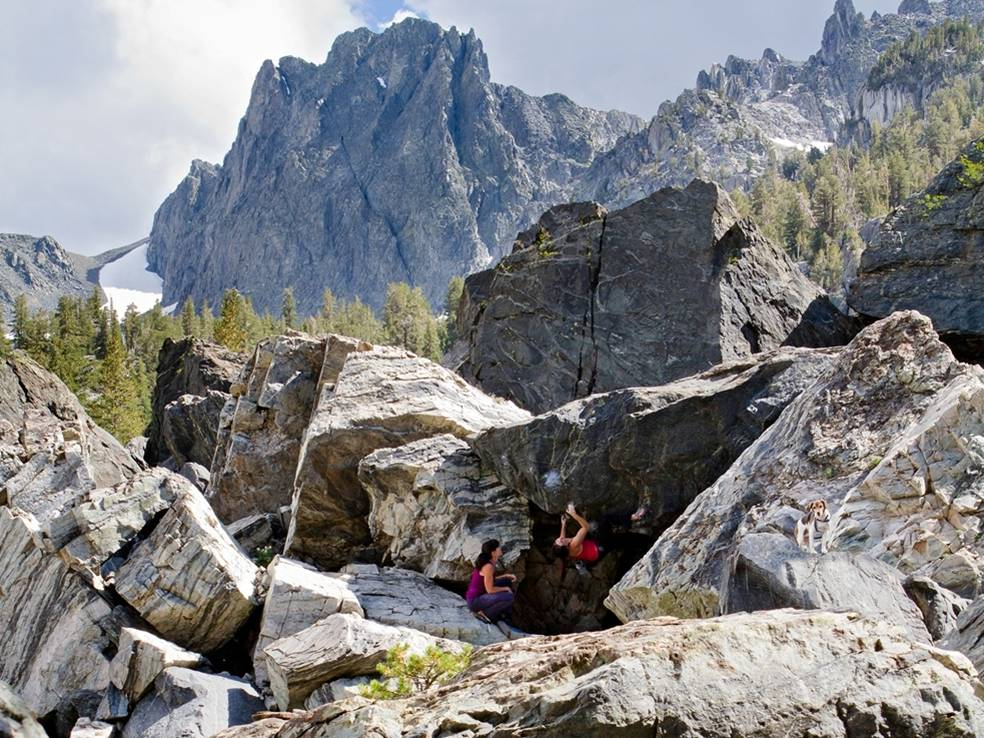
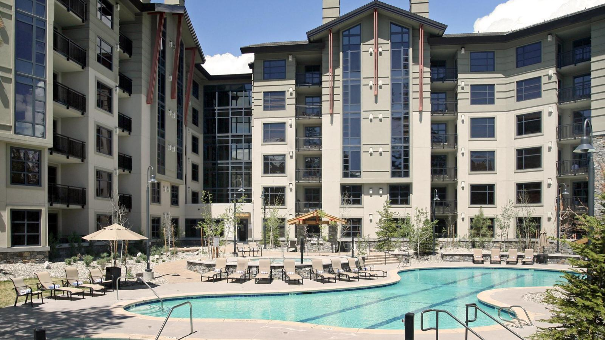
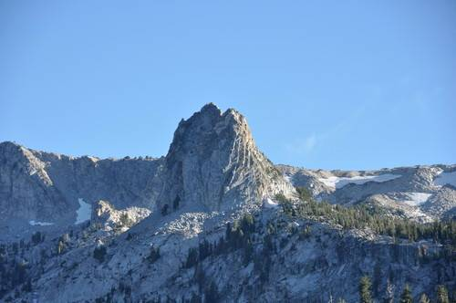
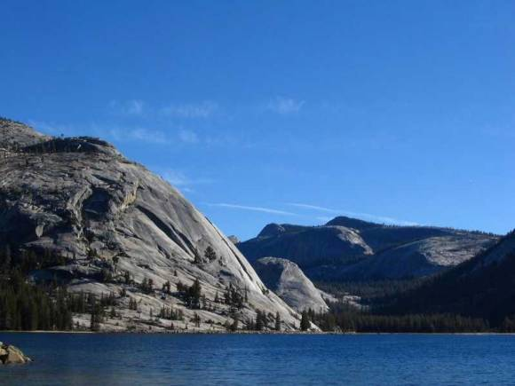
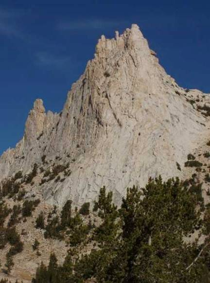

Welcome to ASIC 2015
The Fourteenth Annual Summer Interdisciplinary Conference, held at the Westin Monache Resort in Mammoth Lakes, California, July 10–15, 2015.

Bouldering at Way Lake, Mammoth Lakes
The dates were chosen to make it possible for attendees to travel on July 16 to Southern California for the Mathematical Psychology Meetings held July 17–20 at the Hyatt Regency in Newport Beach (workshops/tutorials on the 17th), a special "industry meets mathematical psychology" conference on July 21, and then the Cognitive Science Society Annual Meetings in Pasadena, July 22–25 (workshops on the 22nd). The Westin is an excellent four-star hotel — westinmammoth.com.
The Mammoth Lakes/Yosemite airport is 10 minutes from Mammoth Lakes, with one flight a day to and from Los Angeles on Alaska Airlines. Driving time from Los Angeles airport is about five hours.
Mammoth Lakes is at about 8,000 feet elevation on the eastern slopes of the Sierra Nevada mountains, providing pleasant summer temperatures and outstanding scenery and choices of outdoor activities. It also provides the best and easiest summer access to Yosemite National Park.
Richard M. Shiffrin of Indiana University – Bloomington is the organizer: email correspondence should be directed to shiffrin@indiana.edu.
About the conference
The subject matter of the ASIC conferences is interdisciplinary, within the broad frame of Cognitive Science. ASIC uses the very successful format of previous ASIC and AIC conferences: days are free for leisure activities and discussions among participants. The talks are in the later afternoon/early evening, followed by dinner. The date has been chosen to make it convenient for attendees to bring family/friends. The conference is open to all interested parties, and an invitation is NOT needed to attend. However, due to the small number of spots for speakers, the organizer will select the attendees to give talks, and choose the lengths of talks.
Conference aims
The conference covers a wide range of subjects in cognitive science, including: modeling of cognition; neuroscience and cognitive neuroscience; psychology (perception, psychophysics, attention, information processing, memory and cognition); computer science and artificial intelligence; machine intelligence and learning; methodology and statistics; linguistics, psycholinguistics and computational linguistics; and philosophy of mind and cognitive science. We especially invite talks emphasizing theory, mathematical modeling, and computational modeling.
Conference format
There is a single speaking session each day, intentionally organized to maximize the dissimilarity of each day's presentations. If the number of participants exceeds the number of speaking slots (about 42), the organizer will select some talks to be of shorter duration, and if necessary choose the speakers who will present.
The conference starts with registration and a reception with wine, beer, drinks and food from 15:30–16:15 on Friday, July 10. On subsequent days there are drinks and light snacks from ~16:00–16:15, followed by a session of about seven spoken presentations that include a mid-session drink break. The last evening of talks is Wednesday, July 15, so plan to depart no earlier than Thursday, July 16.
Talks & Submissions
Whether or not you have already sent this information to the organizer by email, please provide a list of authors, affiliations, emails, a title, and an abstract.
Provide a list of authors (with the presenter indicated), their affiliations, and emails; a title; and an abstract (limit 250 words). These may be changed later, so do not hesitate to send them as early as possible. The organizer uses these to plan the conference and organize the sessions.
Regular talks are limited to 30 minutes, a time that includes interruptions for questions and final discussion — plan for about twenty minutes of actual speaking. Talks should be aimed not at specialists but at a general scientific audience.
Registration
If you are planning to attend ASIC 2015, fill out the registration form and submit your registration fee.
This fee pays for rental of the conference room, equipment rentals, snacks and drinks at conference breaks, the group rock climbing day(s), and the opening reception.
Fee schedule (US dollars)
| Timing | Professional attendees | Guests, 10+ years |
|---|---|---|
| Prior to January 1, 2015 | $250 | $50 |
| January 1 – March 1, 2015 | $300 | $75 |
| After March 1, 2015 | $350 | $100 |
Registration and payments are made via the Indiana University Conference Bureau as indicated on the registration form.
Lodging
A block of rooms is held at the Westin Monache Resort in Mammoth Lakes, California — a four-star hotel with many services and facilities.

Hotel website: westinmammoth.com.
We recommend a package for room, breakfast and dinner. Attendees can choose a lodging-only package, but the complete package is the preferred choice: dining together as a group is an important component of the conference, fostering interdisciplinary collaboration and information gain.
Rates (breakfast and dinner add $60/day/person)
| Deluxe suite with view | $139/day — King bed, double pull-out sofa bed |
|---|---|
| One-bedroom suite | $169/day — King bedroom + living room with queen pull-out sofa bed; rollaway available |
| Two-bedroom suite | $289/day — King and Queen bedrooms + living room with queen pull-out sofa bed; rollaway available |
Room rates are subject to taxes and fees, currently about 14.75%.
Hotel features
Parking (valet or self), internet access, local and long-distance calls in the US, in-town shuttle service, and airport transfers from the nearby Mammoth Yosemite airport are included in the package. The hotel has a 24-hour fitness facility, an outdoor heated pool and hot tubs, and a business center.
Reservations
Call Micaela Castronova (or her representative) at 760-934-0411, using a code that the organizer provides upon email request to shiffrin@indiana.edu.
Westin Monache Resort
50 Hillside Drive · PO Box 388 · Mammoth Lakes, CA 93546
Information: 760-934-0400
Food & Dining
Mammoth Lakes has many restaurants, but given the lateness of the conference talks and the value of group dining, we recommend the package rates including breakfast and dinner.
Meals are buffet style with a variety of choices including vegetarian options and entrees. The registration fee pays for food and drink at the opening reception and session breaks; alcoholic drinks are charged to individual attendees.
Each day after the opening day, the conference begins with light snacks and liquid refreshments at about 3:45–4:15, followed by talks, and a 15-minute break with more drinks about midway through the session (about 6:00). The first day (Friday, July 10) has a reception starting at 3:15 with name tags, information, schedules, and snacks and drinks. Dinner follows directly after the sessions, at approximately 8:15.
Travel
Travel to and around Mammoth Lakes, California.
It is worth exploring the area with Google Maps and Google Earth. One source of information is the Mammoth Lakes website: visitmammoth.com, which has driving directions from Reno, San Francisco, Southern California and Los Angeles, and information about the Mammoth Yosemite Airport (about six miles from town, with limited regular service).
Another source of travel information is the Westin Monache Resort website, which has a zoomable local-area map: westinmammoth.com/local-area.
The annual meetings of the Society for Mathematical Psychology and, immediately after, the Cognitive Science Society, are held in Southern California following ASIC. Attendees planning to attend either or both might find it most convenient to use Los Angeles airport either as a destination or a place from which to fly to Mammoth Yosemite Airport.
Those driving to ASIC from Southern California should note the possibility of stopping en route at Death Valley. From Mammoth Lakes there is relatively easy driving access to Yosemite National Park.
Activities
A large variety of outdoor activities can be found around Mammoth Lakes, in the upper elevation portion of Yosemite National Park just to the west (Tuolumne Meadows), and in the eastern slopes of the Sierra Nevada mountains just to the south.
These include walking, hiking, scrambling, mountaineering, rock climbing, mountain biking, road biking, fishing, kayaking, golfing and much more.
Climbing — Mammoth Lakes area
One of the area activities is a group rock climbing day (or perhaps two), free to all who register and wish to come, aimed at introducing beginners and novices to outdoor rock climbing in a scenic venue. As has been the case for almost every ASIC conference, we are again lucky to have the services of Guido Bonvicini for climbing and other outdoor activities. There are a large number of rock climbing areas adjacent to or near Mammoth Lakes; a guide to local climbing is Mammoth Area Rock Climbs, 3rd Edition, by Marty Lewis.

Crystal Peak, Mammoth Lakes — an easy multipitch climb
There are also a variety of walls, including Dike Wall, and plentiful bouldering opportunities in the Way Lake area.
Yosemite National Park & Tuolumne Meadows
Yosemite Valley is extremely crowded in mid-summer and, at relatively low altitude, very hot. However the high-altitude portion of Yosemite, Tuolumne Meadows, has good summer temperatures, is wonderful for hiking, photography, and rock climbing, and is easily reached from Mammoth Lakes via Tioga Pass (about 45 minutes by car).
A visit to the valley floor from Mammoth Lakes is possible during conference days but time-limited: allowing three hours each way and a return by 4 PM for talks leaves only about three hours in the valley itself. Views of Half Dome and Yosemite Valley are available from a short walk near Olmstead Point at the west end of Tuolumne Meadows.

The Great White Book, Tuolumne Meadows
The possibilities for rock climbing in Tuolumne Meadows are endless, given the profusion of granite domes; a book describing many of the main possibilities is Tuolumne Free Climbs, 2nd Edition, by Barnes, McNamara, and Roper. Many climbs are easy or intermediate in difficulty and involve many pitches, with some adjacent to the road or a short walk away, feasible on conference days.

Cathedral Peak, Tuolumne Meadows
Contact
Email is preferred for all correspondence.
Conference organizer
Rich Shiffrin
Indiana University – Bloomington
shiffrin@indiana.edu
Tel: 812-855-4972 · Fax: 812-855-9871
Webmaster / Conference Coordinator
Ruth Eberle
Phone: (812) 856-5722
reberle@indiana.edu
Patrick Craig
Phone: (812) 856-6037
pjcraig@indiana.edu
Postal address
Annual Summer Interdisciplinary Conference (ASIC 2015)
c/o Prof. Richard Shiffrin, Psychological and Brain Sciences Department
Indiana University, 1101 E. 10th St., Bloomington, IN 47405